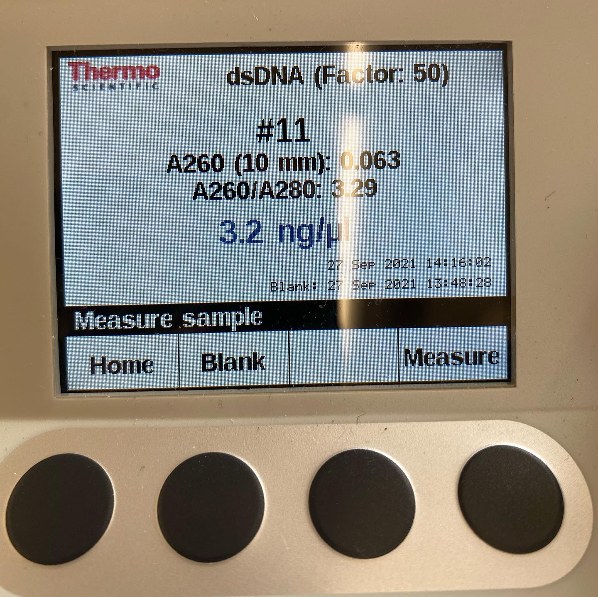

Edward Friedman enjoys photographing street art, fashion, and his local environment. When
he is not taking pictures for fun, he can be found listening to music or drawing with his oil
pastels!
Pose ImageSmokey the CatCollage of Recent

Virus Lab Purity SampMy Tzfat RingMax the CatTzfat